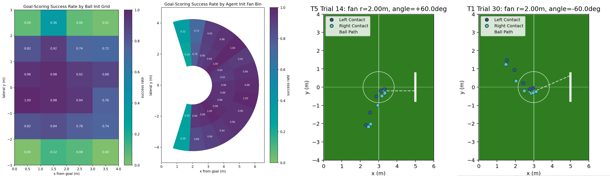
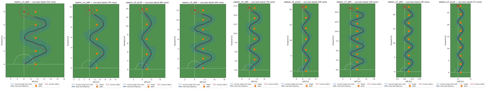

Abstract
Humanoid soccer contact skills require the robot to close the loop over perception, approach, alignment, impact, and recovery while its own motion changes the viewpoint and can hide the ball. DAVIS asks whether a humanoid can learn deployable soccer contact skills from only a head-mounted depth image, proprioceptive history, and an optional low-dimensional task command, directly outputting 25-DoF joint PD targets without external scene state, runtime perception, or planning. The framework learns visibility-aware auxiliary geometry during training and combines GT-to-prediction annealing, task curricula, and AMP-style motion priors to bridge privileged supervision and deployment. We instantiate separate shooting and directional-dribbling policies, and evaluate them in IsaacLab, on the Noetix E1, and through controlled ablations.
Video
What DAVIS enables
Depth → whole-body control
The deployed graph keeps a single 168×80 head-mounted depth frame, a five-step proprioceptive history, and an optional task variable. The actor outputs 25-DoF joint PD targets.
The head is part of the loop
The E1 has 23 body DoFs and 2 head DoFs. Learned head control changes the next depth observation and is trained jointly with locomotion and contact.
One interface, separate policies
Shooting and directional dribbling use separate checkpoints with the same depth-to-control interface; new skills change task objects, commands, rewards, and curricula.

Method
DAVIS puts structure in training rather than in a brittle deployment stack. Auxiliary geometry and visibility heads learn from privileged simulation labels, while confidence gating and GT-to-prediction annealing move the actor from stable geometric guidance to depth-derived features.

Simulation → camera
Both simulated and real depth are cropped to 168×80, clipped to 0.3–5.0 m, normalized, and zero-filled at invalid pixels.
Geometry × visibility
Ball and goal geometry are confidence-gated before entering the actor; privileged labels supervise the auxiliary heads during training.
Isaac Lab → E1
Policies train for 20,000 PPO iterations, export to ONNX, and run at 50 Hz with a 200 Hz PD loop and 15 Hz depth stream.

Skill instantiations
Goal-directed shooting
Separate shooting checkpoints handle penalty and free kicks from randomized positions. The actor receives no operator command and learns one-shot approach, alignment, and contact.

Directional dribbling
A separate checkpoint receives only a joystick direction and learns repeated contacts for target reaching, obstacle traversal, and repeated-S slalom tasks.


Results
Robot trials
Shooting records 26/38, 28/49, and 33/60 successes for Easy, Medium, and Hard settings. Dribbling records 22/28, 19/28, and 17/28 for target reaching, obstacle traversal, and slalom.
A success requires one-kick goal-line crossing for shooting, and an upright robot with both robot and ball within 1 m of the target for dribbling.

| Question | Evidence from ICRA experiments |
|---|---|
| Does depth-only control work? | Separate end-to-end shooting and dribbling policies perform in simulation and on the E1. |
| Which structures matter? | Annealing, geometry supervision, visibility gating, AMP, and learned head control are evaluated by ablation. |
| Does it compare favorably? | At 1 m tolerance, DAVIS reaches 0.88 target-reaching and 0.96 obstacle-avoidance success, compared with reported Dribble Master rates of 0.87 and 0.93. |
BibTeX
@inproceedings{davis2026,
title={DAVIS: A Depth-Only End-to-End Active-Vision Framework for Humanoid Soccer Skills},
booktitle={Conference on Robot Learning},
year={2026}
}